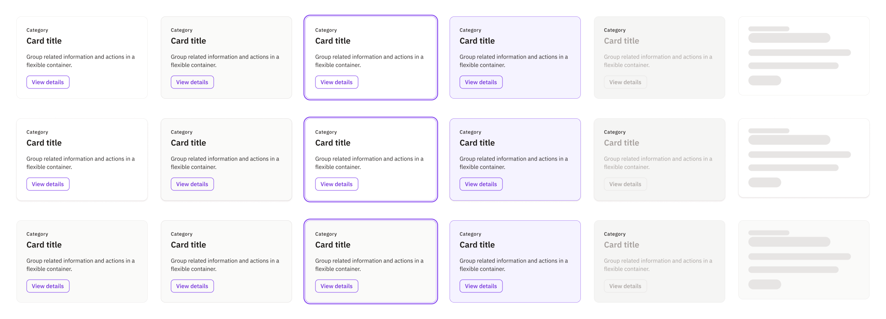
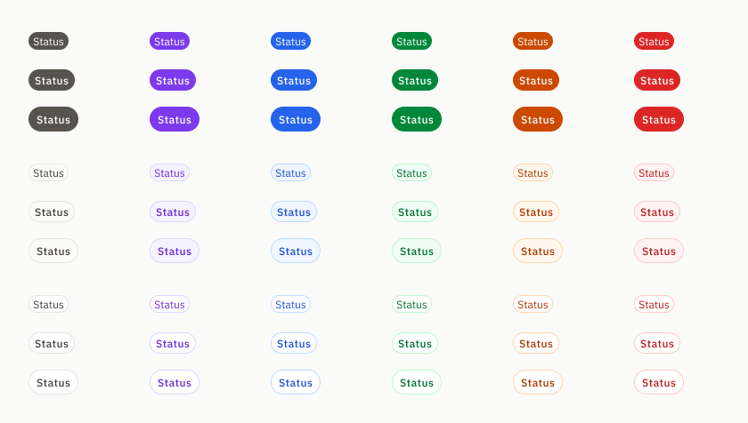
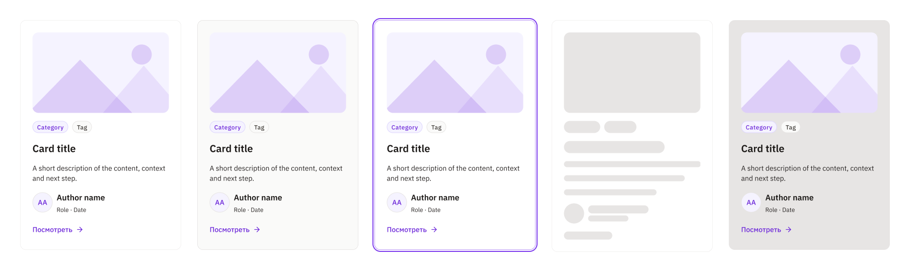
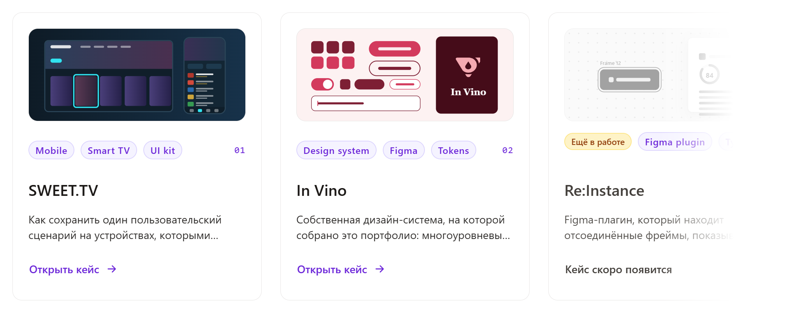
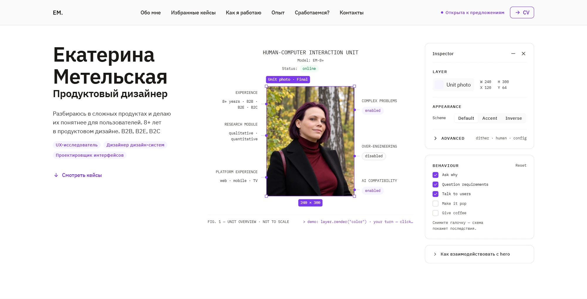

О проекте
За годы работы я успела познакомиться с разными дизайн-системами: Consta, Ant Design, Tailwind, Carbon и Material Design. В каждой находила удачные решения, которые хотелось использовать, но ни одна полностью не отвечала моим представлениям об удобной библиотеке компонентов.
Так появилась идея собрать собственную дизайн-систему. Я хотела создать инструмент, с которым мне самой будет комфортно работать и который смогу использовать в будущих проектах.
In Vino стала такой основой. На ней я собираю своё портфолио и планирую разрабатывать другие небольшие продукты. При этом продолжаю развивать саму систему, пересматривать отдельные решения и пробовать новые возможности Figma.
Что хотелось сделать иначе
Работая с готовыми дизайн-системами, я часто сталкивалась с ограничениями компонентов. Особенно это касалось таблиц и других элементов для отображения данных. Изменить содержимое ячейки или карточки, адаптировать её под конкретную задачу не всегда получалось без отсоединения экземпляра.
С другими компонентами возникали свои сложности. Где-то было слишком много вариантов, в которых приходилось разбираться, а где-то не хватало даже базовых состояний, например Hover.
В In Vino я постаралась найти баланс между гибкостью и удобством. Для настройки содержимого использовала слоты и свойства компонентов, а варианты оставила для действительно необходимых различий и состояний.
Отдельное внимание уделила токенам. Я хотела с самого начала выстроить систему переменных, чтобы управлять оформлением централизованно и не менять каждый компонент вручную.
Архитектура токенов
Прежде чем приступить к созданию библиотеки, я подробно изучила возможности Figma Variables. Разбиралась в документации, смотрела примеры использования и сравнивала разные подходы к организации токенов.
В итоге остановилась на многоуровневой структуре. В её основе лежат примитивы с базовыми значениями цветов, размеров, типографики и других параметров. На них опираются семантические токены, разделённые по назначению.
Для визуального оформления предусмотрены светлая и тёмная темы. Плотность интерфейса можно переключать между Default, Compact и Comfortable. Отдельные коллекции отвечают за типографику, размеры, формы и движение.
На последнем уровне находятся токены компонентов. Они наследуют значения из семантического слоя и позволяют управлять оформлением отдельных элементов, не затрагивая всю систему.
Вход через SSO
Пользователь входит через корпоративный SSO; сессия завершается через 30 минут бездействия.
Попробуйте: переключите режимы и наведите на элементы карточки
Архитектура остаётся гибкой. При необходимости я могу добавлять новые режимы, расширять существующие коллекции или пересматривать зависимости между ними.
Архитектура компонентов
При создании библиотеки я старалась придерживаться композиционного подхода. Сначала собирала базовые элементы, а затем использовала их для построения более сложных компонентов.
Обычно структура ограничивается тремя уровнями вложенности. Это помогает повторно использовать элементы и упрощает работу с компонентами, когда нужно что-то изменить.
Для настройки содержимого использовала разные возможности Figma. Варианты и свойства позволяют управлять предусмотренными состояниями и параметрами компонентов. Там, где содержимое может меняться сильнее, использовала слоты.
Такой подход особенно пригодился в таблицах, карточках, меню и списках. Например, внутри ячейки таблицы можно заменить вложенный компонент или изменить состав содержимого, сохранив связь с библиотекой.
Вставить в слот
Свойства
Попробуйте: добавьте блоки в слот и смените Surface — содержимое сохранится
Слот Content в ячейке
Композиция
Попробуйте: выберите ячейку и поменяйте её содержимое — таблица остаётся экземпляром библиотеки
Попробуйте: добавьте участников и смените Size — лишние уйдут в счётчик «+N»
Попробуйте: поменяйте свойства на панели — она устроена как панель инстанса в Figma
Работа с состояниями
Для интерактивных компонентов я определила базовый набор состояний. Но по мере использования библиотеки обнаруживались сценарии, которые изначально не учла.
Например, у карточки в состоянии Active тоже должен быть Hover. Это стало заметно уже во время работы с компонентами, поэтому набор состояний пришлось дополнить.
State=Active
State=Active + Hover

Сейчас я сама использую In Vino и постепенно дорабатываю её под возникающие задачи. В дальнейшем планирую открыть библиотеку для других дизайнеров и собирать обратную связь.
Визуальный язык
Больше всего времени при работе над визуальным языком In Vino занял подбор цветовой палитры. В течение нескольких месяцев я экспериментировала с оттенками и их сочетаниями, стараясь найти гармоничную палитру, которая будет хорошо восприниматься на разных экранах.
При этом основной акцент не должен был конкурировать с цветами состояний. Поэтому я остановилась на фиолетовом, который хорошо сочетается с остальной палитрой и не смешивается визуально с цветами успеха, предупреждения и ошибки.
Палитра интерфейса · 8 семейств из .Primitives

Попробуйте: переключите поверхность Light / Dark
К отступам и скруглениям подошла более прагматично, опираясь на распространённые стандарты проектирования интерфейсов. С типографикой определилась быстрее. Основой стали IBM Plex Sans и IBM Plex Mono.
Скругления · radius
- none0 · таблицы, разделители
- xs2 · бейджи, код
- sm4 · поля, малые кнопки
- md8 · карточки, панели, кнопки
- lg12 · модальные окна
- xl16 · выдвижные панели
- 2xl20 · акцентные блоки
- 3xl24 · маркетинговые блоки
- full999 · пилюли, аватары
Тени · shadow, тонированы vino-950
- noneстроки таблиц
- xsлёгкий подъём
- smкарточка, панель
- mdменю, подсказка
- lgмодальное окно
- xlкомандная палитра
В итоге получился набор визуальных правил, который я могу использовать как отправную точку для новых интерфейсов.
Применение на практике
Первым проектом на основе In Vino стало моё собственное портфолио. Я использую библиотеку для проектирования интерфейса сайта и одновременно проверяю, насколько удобно работать с её компонентами в реальных макетах.
В библиотеке · Media Card

На сайте · карточки кейсов

В процессе появляются новые задачи, которые помогают находить ограничения существующих решений и постепенно дорабатывать систему.
В дальнейшем планирую использовать In Vino и в других собственных проектах, в том числе при разработке интерфейсов плагинов для Figma.

Итоги и дальнейшее развитие
In Vino продолжает развиваться вместе с проектами, для которых я её создаю. Сейчас я сама выступаю основным пользователем библиотеки, поэтому могу проверять решения в работе и постепенно улучшать то, что оказалось неудобным.
В дальнейшем хочу открыть систему для других дизайнеров и собирать обратную связь. Мне интересно посмотреть, насколько понятной и удобной она окажется за пределами моих собственных сценариев.